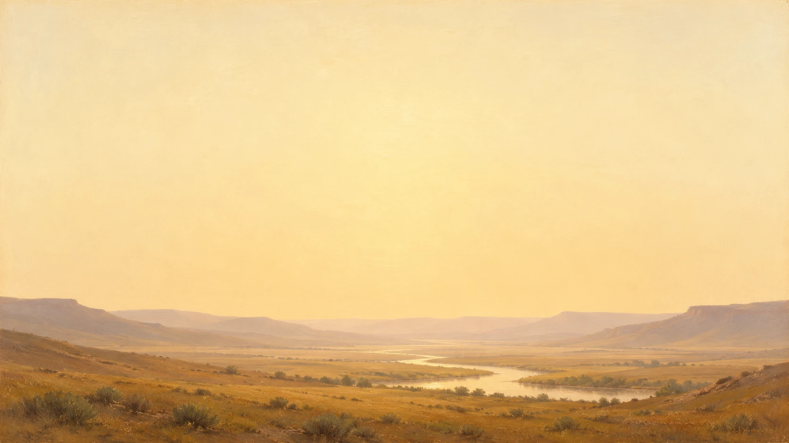
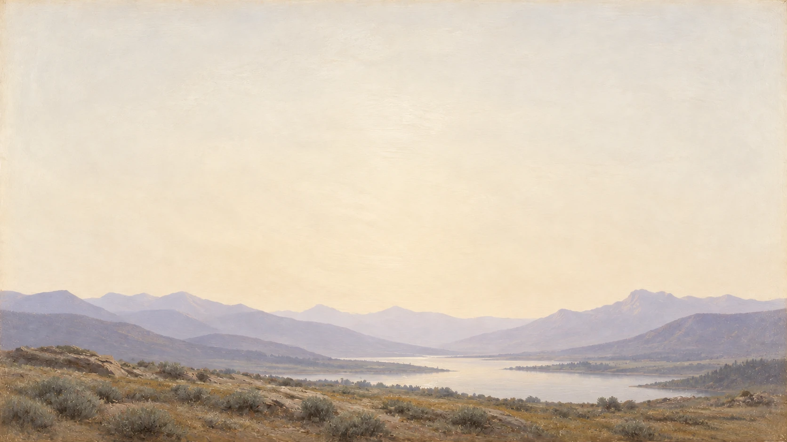
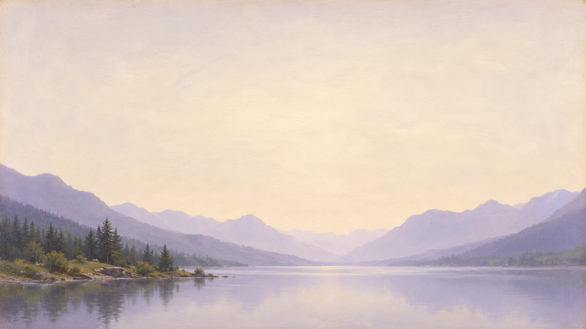
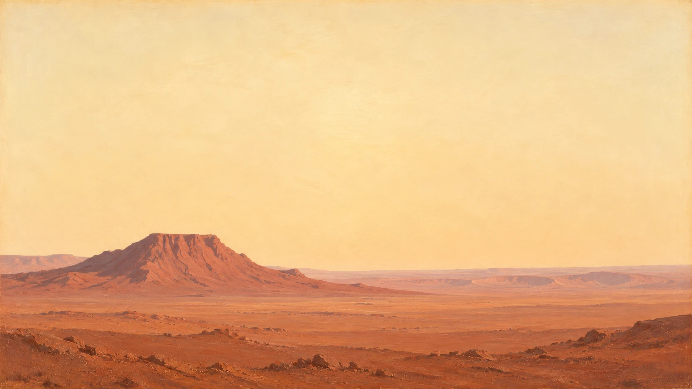
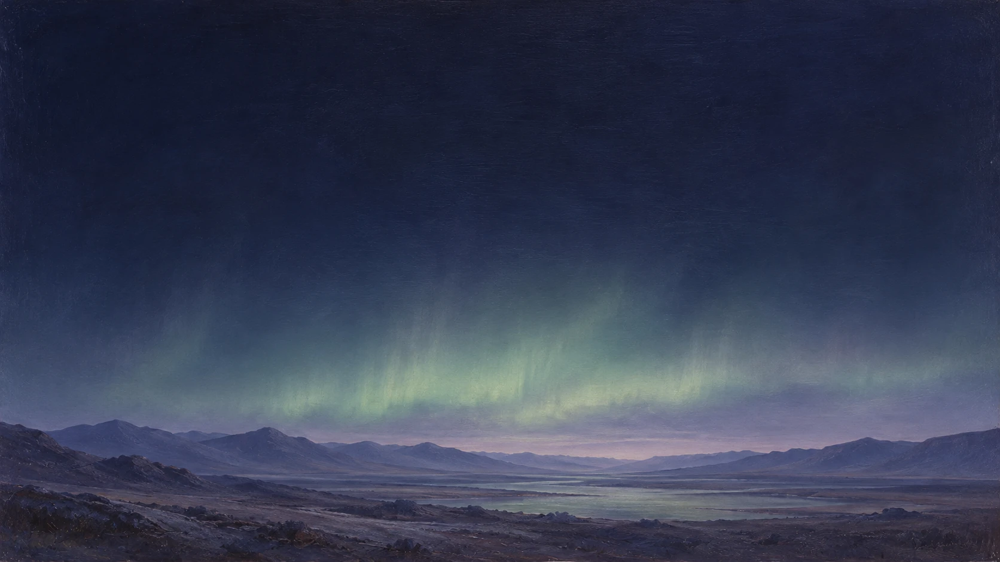
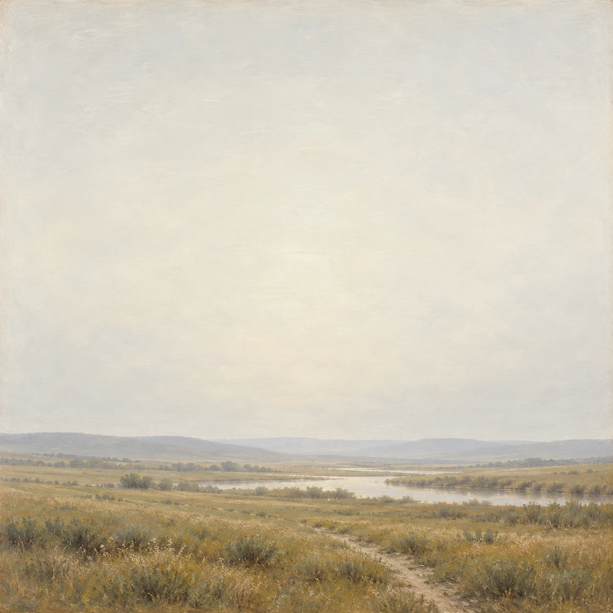
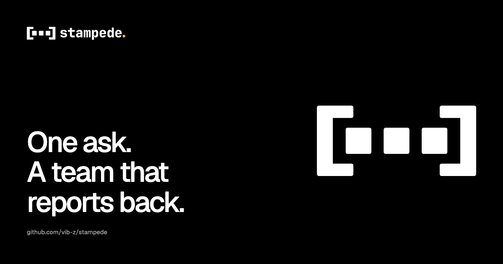

stampede / Brand guide 0.1
Give the team room.
Keep the intent clear.
One ask. A team that reports back.
A working kit for everything we put into the world.
01
One name. One identity.
stampede is always lowercase, even in headings and at the start of a sentence. The name stays plain. The drawn wordmark keeps its full stop.
One ask. A team that reports back.
Open gate is the only logo: three agent cells, two brackets and the original outlined wordmark. Use the full lockup where space allows, and the mark for icons and the hero. Keep the supplied geometry.
 White with the original amber full stop
White with the original amber full stop Ink on paper
Ink on paper White on near-black
White on near-blackInk on paper
02
Give the mark room.
Clear space is one wordmark cap-height on all four sides: 0.76 times the lockup height. For the standalone mark, reserve half the bracket height around it.
The lockup is at least 20 px tall, about 153 px wide. The standalone mark is at least 16 px wide; use 32 px or more in interface layouts. Do not add the wordmark to a favicon.
On dark, the original amber full stop is the default. A white full stop is supplied for applications that require one ink. It is the same artwork, not a second identity.
One cap-height of clear space on every side.
| Form | Minimum | Use |
|---|---|---|
| Lockup | 20 px high | Headers, README, credits |
| Mark | 16 px wide | Favicon; 32 px or more in UI |
| Hero mark | 96 px phone / 124 px desktop | Centred above the title |
Do
Use the supplied mark, at its natural proportions, on a quiet neutral ground.
Avoid
Stretch, rotate, crop, outline, add effects, redraw the cells or replace the wordmark.
Default / amber full stopOne-ink use / white full stop
03
Quiet by default.
Dark ground is #0A0A0A with #F5F5F5 text. Light ground is #FFFFFF with #0A0A0A text. Every interface grey is neutral. The logo ink itself stays pure black or white.
Amber #FFB547 belongs to the Star on GitHub button and the original full stop. It does not become a page wash, a heading colour or a general highlight.
The original animation keeps its waiting amber and success green. Third-party marks keep their own colours. Soft natural colour belongs to the painterly scenery. Use a written label for every product status.
Normal text needs at least 4.5:1 contrast; large text and essential control boundaries need 3:1. Use the control-edge token for an input boundary, not the decorative hairline.
Dark
Light
One accent. A defined job.
Do
Build hierarchy with surface levels, space and text greys.
Avoid
Tint the neutral surfaces or use amber as decoration.
04
Precise, with a human rhythm.
Use Geist for headings, body and controls. Use Geist Mono for commands, file paths and numeric data. Both fonts are self-hosted. The wordmark remains the supplied JetBrains Mono ExtraBold outlines; never retype it in Geist.
Use weights 400, 500 and 600. Display headings are usually 500, with -0.02em tracking from 32 px upwards. Body is 15 or 16 px at 1.6 line-height. Keep body measure at or below 624 px.
A two-tone heading may continue in a readable neutral grey. No gradients, coloured words, bouncing type or decorative uppercase paragraphs.
| Specimen | Token / size | Use |
|---|---|---|
| Aa | Display / 72 px | Hero; 40 to 44 px on phones |
| Aa | Heading / 48 px | Major sections; 32 px on phones |
| Aa | Title / 32 px | Section heading |
| Aa | Subtitle / 24 px | Panel heading |
| One ask. A team that reports back. | Body / 16 px | Reading text; line-height 1.6 |
| Read the docs | Label / 14 px | Controls; weight 500 |
stampede new --file ask.md | Mono / 13 px | Commands and numeric data |
| Asset specifications | Small / 12 px | Supporting labels, never body |
05
Space does the organising.
Work on a 4 px base. Use 4, 8, 12, 16, 24, 32, 48, 64 and 96 px. Reserve 64 to 96 px between desktop sections and 40 to 64 px on phones.
At 390 px: four columns with 20 px gutters and 12 px gaps. At 768 px: eight columns with 28 px gutters and 16 px gaps. At 1440 px: twelve columns, a 1200 px content width and 24 px gaps. Text columns stay narrower than image fields.
Use radii 4, 8 and 16 px by scale. On dark, build depth with neutral surface steps and a single hairline, without drop shadows. Over scenery, use a 95 percent opaque neutral panel with a 36 px backdrop blur; that strong ground protects the words.
Controls have a target of at least 44 by 44 px and a visible 2 px focus ring, offset 4 px. Keep these rules on desktop as well as on phones.
4
8
12
16
24
32
48
64
96
06
Say what happens.
Write in plain, short sentences. Name the action and the result. Use the present tense. Keep the main point first and the next step concrete.
Write stampede in lowercase. Write Claude Code, Codex, Cursor, Herdr and other product names as their makers do. Use simple punctuation and no em or en dashes.
Do not narrate the page or add captions that tell the reader a picture is a picture. Keep source and production details in credits. Never invent a run, a result, an endorsement or a release claim.
Do
One ask. A team that reports back.
Avoid
A revolutionary agent orchestration ecosystem.
Do
Read the docs.
Avoid
Discover the possibilities of seamless productivity.
Do
The lead asks before merging.
Avoid
Enjoy peace of mind with unprecedented control.
07
A quiet world. A sharp foreground.
Keep two separate layers: a painterly atmosphere underneath and crisp product UI above. The scenery carries mood. The UI carries meaning. Logos and agent marks stay on solid neutral fields.
Our worlds are valleys, mountains, lakes, planet surfaces, outer worlds and grassy landscapes. Use soft watercolour, gouache-like washes or the luminous painted-board handling in the selected references. Keep natural colour muted, edges soft and the upper half or one side genuinely quiet.
Use one scene at the emotional turn of a page. A guide may show several specimens; a product page should not feel like a gallery. Low terrain, broad sky and modest detail make room for the foreground.
Light treatment: pale scenery with near-black text on a strong white panel. Dark treatment: retain the painting and flip the panel to near-black with soft white text. Protect the text locally instead of making the entire painting grey.
Keep the original image, exact prompt, references, provider, date and output dimensions in the source record. Record model and seed only when exposed. Inspect native-size detail and all four edges before use. Credit third-party sources and retain their rights statements.
Do
Reserve a calm region and mount real UI on a solid or strongly frosted panel.
Avoid
Paint lettering or logos into the scenery, use a visible mount, or place text over a busy horizon.






stampede
stampede new --file ask.md08
One entrance. Then still.
Open gate keeps the original 2400 ms run, once on load. Cells enter from behind the left bracket, land in slots 3, 2 and 1, and squash for 80 ms on contact. Do not add a new drop, dust effect or status sequence.
At 640 ms the cells begin their 12 fps scan. At 1140 ms the middle cell holds amber. At 1390 ms the left turns green. From 1890 to 2240 ms the cells return to ink. The mark rests from then on; the dark full stop remains amber.
Reduced motion and data-motion="off" show the static mark immediately. Body text, agent logos and ordinary product branding remain still. Never use the logo run as a progress indicator.
For ordinary UI, use 100 ms feedback, 150 ms presses and up to 250 ms transitions. The Star CTA has a 120 ms press, 150 ms release and one 600 ms sheen on hover or keyboard focus. Reduced motion removes the sheen and transform.
2400 ms / plays once
| Time | Action |
|---|---|
| 0 to 500 ms | Cells enter and land |
| 640 ms | Working scan |
| 1140 ms | Middle cell waits |
| 1390 ms | Left cell done |
| 1890 to 2240 ms | Return to ink |
| 2400 ms onward | Rest |
09
Respect every maker.
Show agent marks unaltered, in their supplied colours and proportions, on a neutral chip. Use equal optical heights, usually 24 to 32 px. They identify the tools; they do not form a stampede logo or imply endorsement.
The star and arrows are original stampede interface icons under the code licence. Use one 1.6 px stroke, currentColor and 16, 20 or 24 px canvases. The gold button uses our own star, with no GitHub Invertocat.
Agent names and logos belong to their owners and identify compatible tools. Anthropic owns Claude; OpenAI owns Codex; Anysphere owns Cursor. Grok Bot belongs to xAI and Tailscale belongs to Tailscale. Keep the source links and rights notes with the assets. No Herdr partner lockup is part of this kit.
Claude
Codex
Cursor
Grok Bot
Tailscale
Do
Place an original agent mark on its own neutral field.
Avoid
Recolour it to amber, animate it or combine it with Open gate.
10
One clear next step.
Star on GitHub is the primary action. Its base is exactly #FFB547, with black text, a restrained metallic surface and a single light sweep. The target is 48 px tall. Keep Read the docs beside it in plain ink.
The count is optional. The component fetches the public repository API, caches a valid count for one hour, and hides it on timeout, HTTP error or invalid data. No credentials are sent. Without JavaScript, it remains a working link. Portable previews disable the API request.
The standalone component contains its HTML, CSS and tiny script. The guide uses the same styles and real links. Use the secondary neutral button for ordinary actions. Focus, hover and pressed states are available on the controls below.
Terminal frames use a simple bar, one command area and written status. A cell is a neutral square; a status dot always sits beside a label. Keep shell commands copyable and do not add invented output.
Install
git clone https://github.com/vib-z/stampede.gitTerminal
stampede new --file ask.md
Ready to start
11
Ready for the next release.
Use the 1200 by 630 px social card for Open Graph and the 1280 by 640 px image for the GitHub repository preview. Keep essential content 64 px inside every edge. The GitHub PNG stays under 1 MB.
The README header uses the static lockup in a light and dark picture element, 320 px wide. Preserve the source aspect ratio and clear space.
For the hero, place hero-mark/component.html directly above the h1. The mark is centred at 124 px wide on desktop and 96 px on phones, with a 32 px or 24 px gap. The original run plays once. Keep the title as real Geist text.
Use the adaptive SVG favicon, ICO fallbacks at 16 and 32 px, a 180 px Apple touch icon, 192 and 512 px app icons, and the maskable 512 px icon. The mark stays inside the maskable central safe circle. Reference the supplied web app manifest.

README header
<picture>
<source media="(prefers-color-scheme: dark)" srcset="site/brand/lockup-dark.svg">
<img src="site/brand/lockup-light.svg" alt="stampede" width="320">
</picture>Hero mark
stampede
One ask. A team that reports back.
12
Use the source files.
Download the whole kit, or take the asset you need. SVGs remain crisp at every size; PNGs are for platforms that need a raster image. Keep the font notices and credits with redistributed assets.
Download the kitAdaptive mark / SVGBlack mark / SVGWhite mark / SVGAdaptive lockup / SVGLight lockup / SVGDark lockup / SVGOne-ink dark lockup / SVGAnimated lockup / SVGInline lockup / SVGLogo motion / CSSAdaptive favicon / SVGFavicon / ICOFavicon / 16 px PNGFavicon / 32 px PNGApple touch / 180 px PNGApp icon / 192 px PNGApp icon / 512 px PNGMaskable icon / 512 px PNGWeb app manifestOpen Graph / 1200 x 630 PNGGitHub preview / 1280 x 640 PNGStar CTA / self-contained HTMLHero mark / self-contained HTMLDesign tokens / CSSGuide / MarkdownAdaptive one-ink lockup / SVGCTA styles / CSSOptional star count / JSCTA markup / HTMLHero mark / inline SVGHero styles / CSSUsage / MarkdownCredits / MarkdownImage prompts and provenance / JSONValley / native WebPMountains / native WebPLake / native WebPPlanet surface / native WebPOuter world / native WebPGrassland / native WebPClaude / original SVGCodex / original SVGCursor / original SVGGrok Bot / original SVGTailscale / original SVGGeist / WOFF2Geist Mono / WOFF2Geist font noticeGeist Mono font noticeWordmark font notice


13
Names and sources matter.
The code licence does not grant rights to the stampede name or marks. Use the supplied assets to identify or link to stampede. Do not alter them, imply endorsement, use the name as your own product name or put it on merchandise without permission.
The Open gate geometry and animation come from the supplied stampede brand kit. Only the resting ink changed to pure black and white; the dark amber full stop remains the default. The wordmark uses JetBrains Mono 2.304 ExtraBold outlines. Geist and Geist Mono serve the interface. These fonts carry the SIL Open Font License 1.1.
Linear is the primary reference for calm composition, type and motion. Vercel and Geist inform the guide structure. No source code, screenshots, marks or artwork from either brand are included.
Third-party agent marks retain their owners' rights. See the credits for the exact source URLs, font notices and image provenance.
Sources and licences